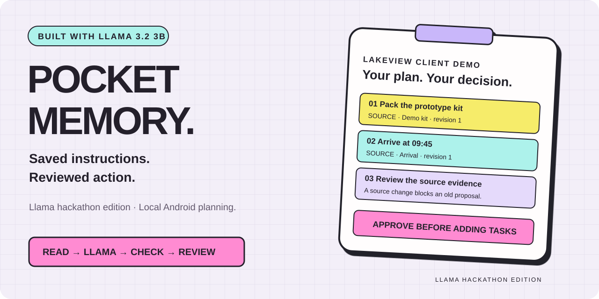
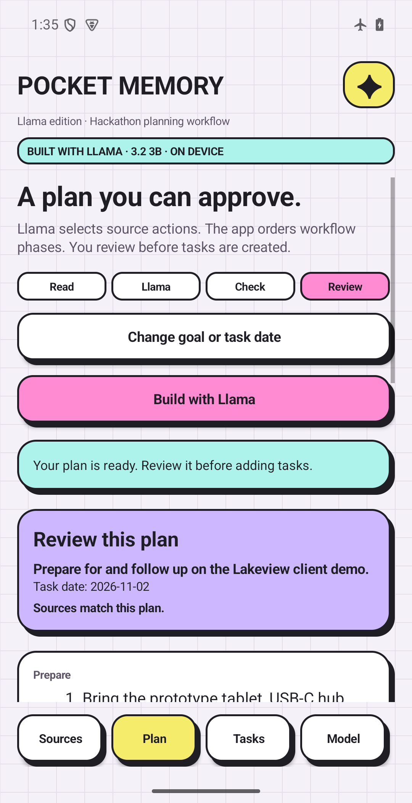
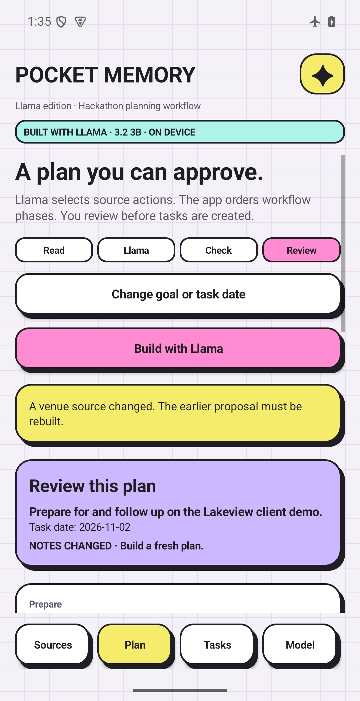
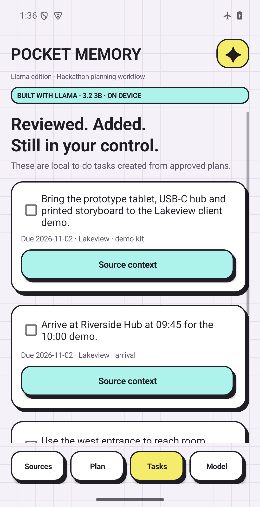

Prepare for a client demo
Arrival, equipment, venue and follow-up live in separate notes. Select the client workflow and leave out an unrelated party.
Verified with real Llama inference in the demo.
Scattered instructions become proposed actions. Meta Llama selects relevant steps; app rules order the phases; you check the evidence and approve what becomes a task.
Edited walkthrough of actual Android captures. Fictional example, real Meta inference, locally synthesized narration. No speed claim. Download video.



Arrival, equipment, venue and follow-up live in separate notes. Select the client workflow and leave out an unrelated party.
Verified with real Llama inference in the demo.Combine instructions to bring supplies, arrive early and return borrowed equipment into a reviewed checklist.
Intended use; broader quality evaluation pending.Collect parts and follow written preparation instructions. Keep the original evidence attached to each action.
Explicit action sentences and one chosen date.Turn saved requirements into selected tasks to review slides, bring materials and submit the handout.
Human review before tasks are created.The sole model is Llama 3.2 3B Instruct, Q4_K_M. A new JNI adapter constrains output to candidate IDs. The app copies exact source text; Llama cannot invent task text or act without approval.
The APK requests no INTERNET permission. Import the separately downloaded, checksum-verified model. No hosted Meta API or Muse model is used.
Pocket Memory's concept/design palette and the public llama.cpp runtime are pre-existing foundations. The demo highlights the newly built planner, review/controller, task transactions and recovery behavior. New-work disclosure.
Selection and phase grouping can be wrong; review each proposal. The prototype handles bounded explicit English action sentences. Physical-phone profiling and broader quality/accessibility testing remain pending. The APK is a hackathon evaluation build.